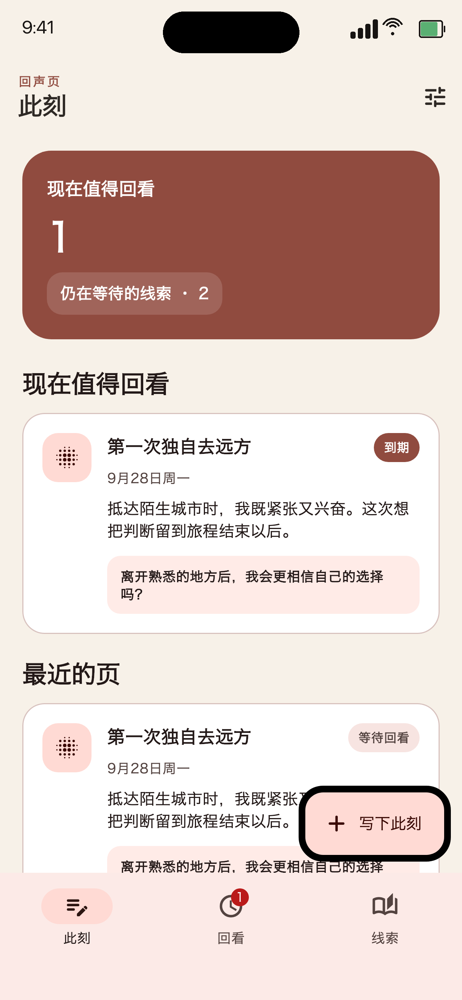
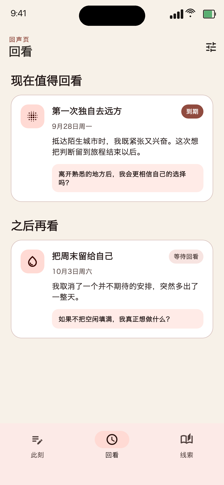
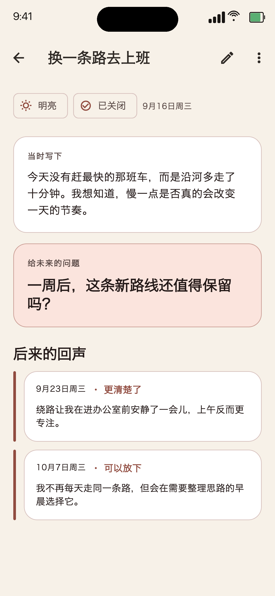

第一次独自去远方
抵达陌生城市时，我既紧张又兴奋。
给未来的问题
离开熟悉的地方后，我会更相信自己的选择吗？
回声页围绕一个小而完整的循环设计，让当时的想法和后来的答案留在同一条线索里。
留下正文、标题和当下色调。正文之外，其余都可以保持简单。
把还没有答案的事写成一个问题，并安排 3、7 或 30 天后回看。
重读原文，写下后来的视角，再标记它是相同、更清楚、方向改变或可以放下。
答案已经足够，就关闭线索；还想再看看，就让它七天后再次回来。
克制的纸张色、明确的到期状态和完整的前后记录，让注意力停留在内容本身。



当前版本没有账号、开发者后台、广告、行为分析或远程配置，也不会主动联网。日记和回声以 JSON 文件保存在应用 Documents 沙盒中。
阅读完整隐私政策主文件、待写文件和应用内备份均在当前安装的应用沙盒中。
只有主动选择“复制完整记录”时，内容才会写入系统剪贴板。
永久删除会清理当前安装中的应用文件；历史系统备份仍由平台和你的设置控制。
回声页仍在准备上架，当前官网不提供下载链接。